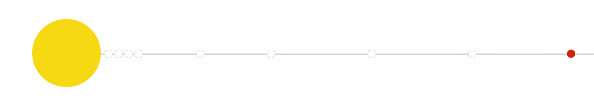
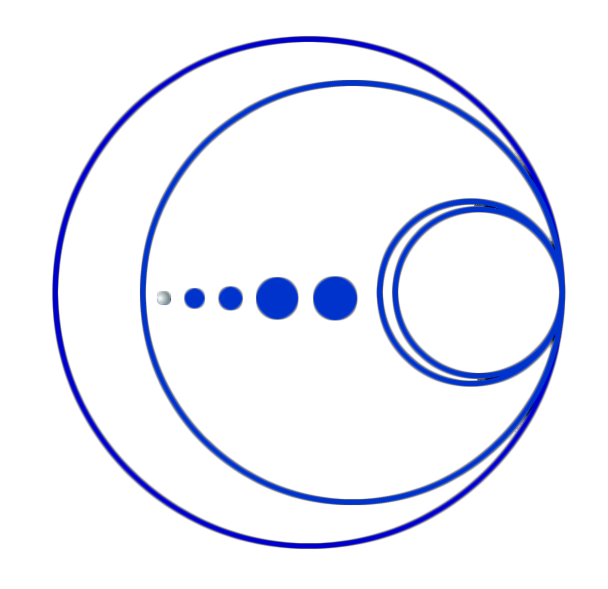

| HOMEPAGE | SISTEMA SOLARE | CORPI CELESTI | ||
| HOMEPAGE | SISTEMA SOLARE | CORPI CELESTI | ||
| paramentri orbitali | |
| semiasse maggiore |
5 906 376 272 km 39,48168677 UA |
| periodo orbitale | 248,09 anni |
| perdiodo sinodico | 366,73 giorni |
| Velocità orbitale |
3 676 m/s (min) 4 669 m/s (media) 6 112 m/s (max) |
| satelliti | 5 |
| anelli | NO |
| dati fisici | |
| diametro equatoriale | 2306 ± 20 km | superficie | 1,795 x 1013 m2 |
| velocità di rotazione | 13,11 m/s |
| temperatura |
33 K (min) 44 K (media) 55 K (max) |
pianeta o asteroide?
Inizialmente fu classificato come il nono pianeta del Sistema Solare, a pari rango degli altri pianeti. Tuttavia sin dall’inizio alcuni astronomi si mostrarono in disaccordo con tale scelta. La discussione si protrasse, fino a quando, nel 2006, l’Unione Astronomica Internazionale, ha deciso di “declassare” Plutone a Pianeta Nano
I motivi che hanno spinto l'Unione Astronomica Internazionale a prendere tale decisione sono diversi e sono legati a peculiarità che Plutone presenta rispetto agli otto pianeti del Sistema Solare. Gli astronomi notarono che la luminosità apparente di Plutone, oltre che presentare valori relativamente bassi (la magnitudine apparente massima è di circa 14), presentava anche delle variazioni cicliche, non imputabili alla presenza del Sole (come nel caso di altri corpi celesti), bensì a un oggetto che ruota intorno ad esso.
 Plutone ha dimensioni (1151 km di un raggio equatoriale) soltanto doppie di quelle di Caronte (603,6 km), mentre tendenzialmente un pianeta risulta essere molto più grande dei propri satelliti: per esempio il rapporto di grandezza tra Terra e Luna è di 5:1. Ciò implica che Plutone e Caronte non rappresentino un vero e proprio sistema “pianeta-satellite”, bensì un sorta di sistema binario pianeta-pianeta (anche questa definizione è tuttora controversa): essi infatti risentono dell’attrazione gravitazionale reciproca, ruotando intorno a un comune centro di gravità che si trova nello spazio tra i due corpi, alla distanza di 950 km dalla superficie di Plutone.
Caronte non è, però, l’unica luna di Plutone: recentemente sono stati scoperti altri corpi orbitanti intorno a esso, Nix e Idra (scoperti nel 2005), P4 e P5, (2011 e 2012 rispettivamente).
Le dimensioni di Plutone sono ridotte rispetto a quelle dei pianeti: è meno della metà di Mercurio, il pianeta più piccolo del sistema solare (2439,7 km di raggio equatoriale) e più piccolo anche della Luna (1738 km). Dallo studio del moto di questo sistema binario è inoltre emerso che Plutone e Caronte hanno una massa che è circa un ottavo di quella della Luna. Tutto ciò ha dunque suggerito che Plutone non è un vero e proprio pianeta, ma potrebbe essere per esempio un satellite sfuggito alla forza gravitazionale di un altro pianeta o un asteroide attratto in quella posizione.